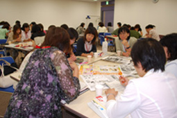

【日 時】
6月20日（金）10：30～12：30
【場 所】
浦和コミュニティセンター第14集会室
【参加者】
44人（生協ネットワーク協議会委員）
＊講座の目的＊
今年に入り国の生活安心プロジェクトとして消費者行政の充実を目指し、消費者庁の創設、消費者行政一元化の動きが活発化しています。しかし、振り込め詐欺や悪質商法が後を絶たず、私たち消費者も、学習し、賢い消費者になることが求められています。
テーマ：「今度はあなたがカモになるかも」
講 師：島田 真子氏
（消費生活コンサルタント、さいたま市・蓮田市消費生活相談員）
◆
悪質商法の概要説明
水道水に試薬を入れ不安をあおって浄水器を販売したり、火災報知器を必要以上に取り付け高額請求したりするなどの具体例を紹介。
具体例として：
悪質な住宅リフォーム工事（床下換気扇等）、点検商法（下水道工事、屋根、布団等）、空き店舗での催眠商法（高齢者を狙う健康食品等）、資格商法2次被害（サラリーマンを狙い会社に連絡）、家庭教師と思わせる教材販売（3～6年分の教材販売）、利殖商法（ロコロンドン金取引、信用取引による高額被害。40代～80代の女性の被害が多い）
クーリングオフ：
布団は使用しても返却可。3,000円未満のものや自動車はクーリングオフできない。食品はクーリングオフの対象外だが味噌はできる等。
◆
ワークショップ
（6つのグループに分かれ、広告を使って意見交換）

☆
コラーゲン入り飲料→これを飲めばお肌つるつる！？
☆
使用前・使用後の写真→写真は本物？等
☆
「風水の額」トイレにこれを飾れば運気・金運アップ！？→額自体は手頃な値段だが次々に勧誘があるのでは？等
☆
「金運アップ財布」これを使うと宝くじが当る！？→財布を使ったからかどうかわからないのでは？等
○
身近なところで悪質商法が潜んでいる、充分な注意が必要と感じました。チラシを見る際や契約する際のポイントがわかりました。
○
地域や単協でも今日のような学習に取り組み、問題意識を高めたいと思いました。